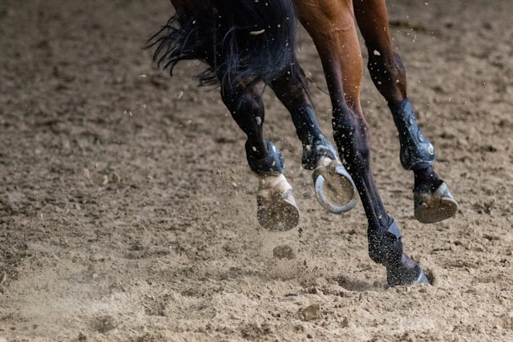
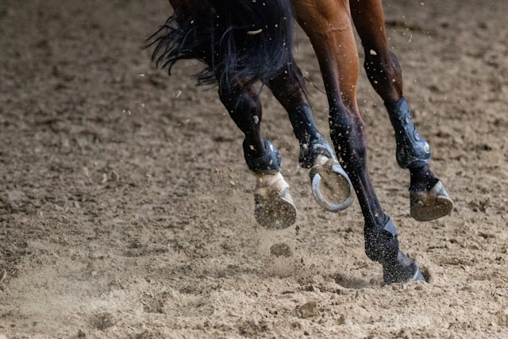

Keine Stunde unseres Lebens ist verschwendet, wenn wir sie im Sattel verbringen. - Winston
Churchill
Das Hauspferd (Equus caballus) ist ein weit verbreitetes Haus- bzw. Nutztier, das heute in zahlreichen Rassen auf der ganzen Welt existiert. Das Hauspferd ist die domestizierte Form des Wildpferdes, das mit den Eseln und Zebras die Familie der Pferde (Einhufer, Equidae) innerhalb der Ordnung der Unpaarhufer (Perissodactyla) bildet.
 
